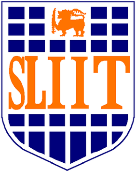

|
Fazli Imam I'm a research associate at MBZUAI in UAE, where I work on AI problems. |

|
News
- August 2024: Joined Dr. Alham's lab at MBZUAI as a Research Associate
- July 2024: Team mentored by our lab wins "Best Team Award" at MBZUAI Undergraduate Research Internship Program
- June 2024: Graduated with MSc in Machine Learning from Mohamed Bin Zayed University of Artificial Intelligence
- July 2023: Completed 8-weeks Data Science Internship at ADNOC's Panorama Digital Command Center
- Aug 2021: Started MSc in Machine Learning at Mohamed Bin Zayed University of Artificial Intelligence
Research


|
EVER: Exact Volumetric Ellipsoid Rendering for Real-time View Synthesis
Alexander Mai, Peter Hedman, George Kopanas, Dor Verbin, David Futschik, Qiangeng Xu, Falko Kuester, Jonathan T. Barron, Yinda Zhang arXiv, 2024 project page / arXiv Raytracing constant-density ellipsoids yields more accurate and flexible radiance fields than splatting Gaussians, and still runs in real-time. |
Teaching

|
Department of Electronic and Telecommunication Engineering, University of Moratuwa, Sri Lanka Lectures - Introduction to Machine Learning September 2022 |
Experience

|
Research Assistant July 2022 - Present |

|
Associate Machine Learning Engineer June 2021 - February 2022 |

|
Visiting student researcher October 2020 - April 2021 Supervisor: Dr. Kanchana Thilakarathna. |
Education
|
MSc. in Machine Learning Aug 2022 - June 2024 |
|
MSc. in Machine Learning Aug 2022 - June 2024 |
|  |
Bachelor's in Science (Hons) in Information Technology Specializing in Data Science Jan 2016 - Dec 2020 |